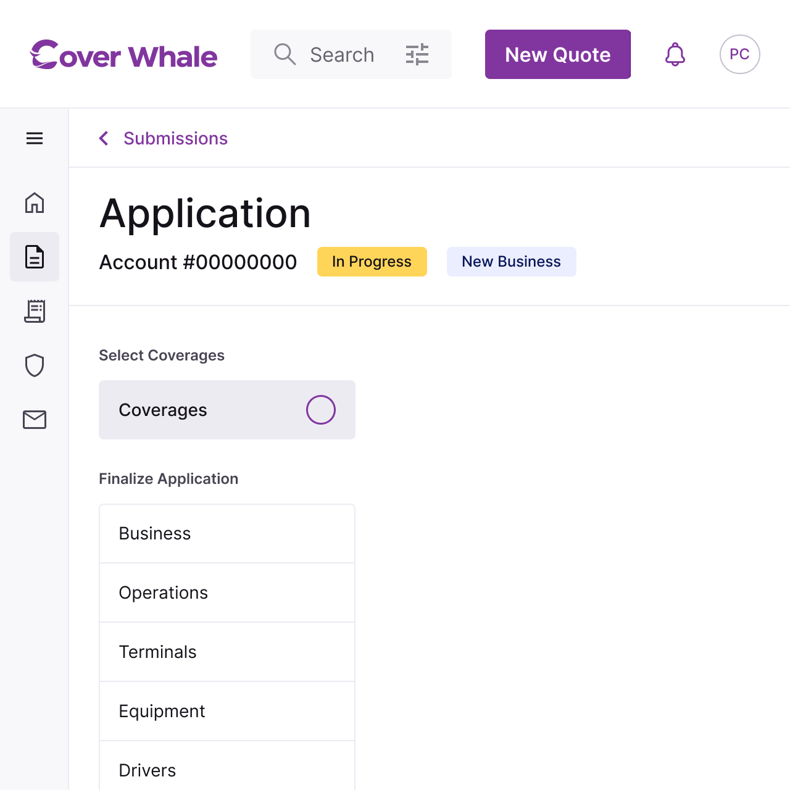

What I Owned
I led research synthesis, application IA, and design direction. I ran the usability testing that surfaced the field naming issue and drove the terminology audit that followed.
Redesigned a high-stakes form flow where mismatched terminology was causing agents to submit incorrect applications — usability testing surfaced that field names had directly contributed to lost sales. The fix required no new features. Just precision.

What I Owned
I led research synthesis, application IA, and design direction. I ran the usability testing that surfaced the field naming issue and drove the terminology audit that followed.
Who I Worked With
Ipek and Dilara (UX, Zurich vendor team), Murat (Front End). Internal stakeholders included the Head of CX, COO, PM, and underwriting leadership.
Context Within the Series
The Quote Application redesign was the second of three interconnected workstreams. The platform architecture redesign — which reorganized the navigation around the policy lifecycle — ran in parallel, and the account model it established made the form's early-eligibility logic possible.
The Setup
A commercial trucking insurance quote requires a lot of information: DOT numbers, VINs, vehicle classes, cargo types, operating radius, driver histories. For a fleet of ten trucks, that's ten sets of manually entered vehicle data before a price appears. Agents were losing business because of this form — not hypothetically. In usability testing, agents reported that inconsistent field names had directly contributed to lost sales.
Two Compounding Problems
Speed mattered because agents compare quotes across carriers in real time. Every minute of manual entry is a minute a competitor's platform isn't wasting. The platform's core value proposition — automated underwriting, real-time quotes — was being undermined by the form that fed it.
Accuracy mattered because errors didn't just slow agents down. They eroded trust with clients. A field labeled 'Business Garaging Address' on the platform meant something different than 'Physical Address' in FMCSA records. Agents were entering data in the wrong fields, submitting incorrect applications, and absorbing the credibility hit when errors surfaced later.
The Directive
From the Head of CX: "Let's get the basics really right, then worry about the rest." The redesign took this literally. Every decision — pre-population, early-eligibility gates, tab consolidation, renamed fields — was measured against one question: does this reduce the cognitive load of data entry under time pressure, for someone managing a client on the phone?
Key Decision 01
The redesigned application opens with a single field: the DOT number. A successful FMCSA lookup pre-populates company details, operating state, and vehicle information — reducing manual entry significantly before the agent has typed a single VIN.
This also front-loads eligibility. Verifying the operating state at entry automatically applies state-specific underwriting rules, which means the system can identify ineligible submissions earlier and surface hard declines before the agent has invested time in a full application.
Key Decision 02
Before reaching the full application, agents pass through a short Pre-Submission Form designed to surface clear ineligibility fast. The business logic: the sooner an ineligible submission is declined, the less time the agent wastes — and the more credibility the platform earns by being accurate rather than stringing the agent along.
Declines generated by the Pre-Submission Form are captured in the Submissions > Declined view, so agents always have a record.
Key Decision 03
The original application separated related information across multiple tabs, requiring agents to move between screens to see the full picture on a quote. The redesign consolidated five sections into three:
Coverages — merged the former Limits section so all coverage details, limits, and fees are visible on one page.
Operations — consolidated Cargo and Radius with SAFER autofill. Positioned early as a source of knockout questions — ineligible cargo types or radius configurations surface before the agent enters vehicle data.
Equipment — merged Vehicles and Trailers into a single tab, treating them as parts of a whole.
Key Decision 04
The field naming audit was one of the highest-impact changes in the redesign — and it required no new features. Renaming 'Insured' to 'Business', replacing 'Business Garaging Address' with 'Physical Address', and aligning all terminology to FMCSA language reduced the gap between what agents saw in the platform and what they saw in their other tools.
The usability testing finding was direct: misaligned field names had caused agents to enter data incorrectly, leading to incorrect quotes and lost business. This was a fixable problem that required precision, not engineering.
Key Decision 05
Previously, adding a vehicle opened a modal — enter data, save, close, repeat for every vehicle in the fleet. For a ten-truck operation, that's ten modal cycles before the tab is complete.
The side drawer replaced this pattern. It slides in from the right, stays open, and allows the agent to add multiple vehicles in a single session without losing context on the parent page. A small change with a significant reduction in clicks for multi-vehicle submissions.
How It Tested
Usability testing validated the tab consolidation and field naming changes most strongly — both reduced errors and reduced the time agents spent second-guessing their inputs. The Pre-Submission Form's early-decline logic aligned with the stakeholder directive to cut to the chase and reduce time spent on ineligible accounts.
The Deeper Lesson
Form design at this level of complexity isn't about aesthetics. It's about reducing cognitive load under time pressure, for someone managing a client on the phone. Every field that pre-fills, every tab that doesn't require a switch, every label that matches the agent's existing vocabulary — that's the product.
What This Enabled
The terminology audit finding — that field names had directly caused incorrect submissions — became a design principle carried into the rest of the platform redesign. Precision of language was treated as a first-class design decision, not an editorial afterthought.